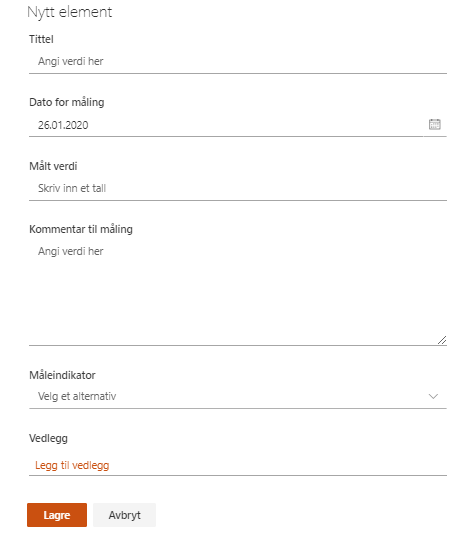

Dette er et verktøy for å utføre målinger på gevinster, sånn at du kan følge med på utviklingen i henhold til målet som er satt.
Ved registrering av en måling velger du hvilken måleindikator den aktuelle målingen gjelder for.
I listen vil da alle målinger bli gruppert inn under sin tilhørende måleindikator.
Resultater fra gevinstoppfølgingen blir automatisk oppdatert i gevinstoversikten på porteføljenivå.
